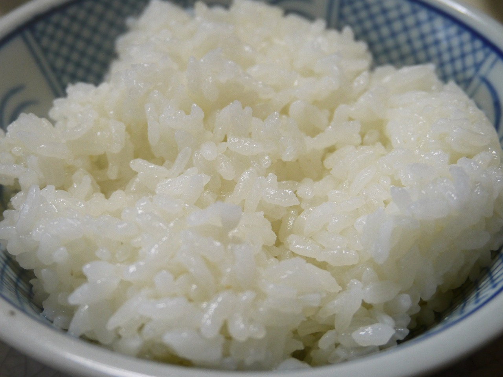

Chicken and Cashews
This is going to sound like a broken record but for the second time I have a recipe I love from a cookbook and you can find it here.
Ingredients
- 1 lbs boneless skinless chicken breast
- 2 in piece fresh ginger root
- 1/2 tsp salt
- 1/4 tsp freshly ground black pepper
- 1 tsp rice wine
- 1 tsp sesame oil
- 2 large egg whites
- 2 tsp corn starch
- 4 scallions
- 1 bell pepper
- 1 small can pineapple chunks
- 4 tbsp peanut oil
- 5 dried chilies
- 1/2-3/4 c cashews
Sauce
- 2 tsp cornstarch
- 2 tsp rice
- 2 tbsp soy sauce
- 1 tsp white vinegar
- 1-2 tbsp sugar, to taste
- 2 tsp sesame oil
- 1-1/4 c chicken stock

Instructions
- Cut the chicken into bite size pieces and place in bowl. Grate 1/3 or ginger over chicken, add salt, pepper, rice wine, and sesame oil. Lightly beat egg whites and mix into chicken with cornstarch. Cover and set aside while preparing remaining ingredients.
- Shred the remaining ginger. Cut the scallions into 2 inch lengths. Cut the bell pepper into bit size pieces. Drain the pineapple and set aside. Measure and set aside remaining ingredients.
- Prepare the sauce. In a small bowl mix the cornstarch with 1 tbsp cold water, then add the remaining sauce ingredients and mix until smooth.
- Prepare your chosen side and set it to cook so it will be finished at the same time. If cooking rice you may want to start this first but the extra time marinating will not hurt the chicken.
- Heat the oil in a wok over moderate heat. Add the dried chilies and stir-fry until they begin to darken in color. Increase the heat to high and continue stirring until the chilies are almost black.
- Add the chicken and stir-fry until it is white, then add remaining ginger, scallions, pepper, pineapple, cashews, and the sauce mixture. Stir-fry until all ingredients are glossy and the sauce has thickened. 3-6 minutes on average.
Note: Serve immediately alongside rice and be careful to either remove dried chiles or warn your guests.